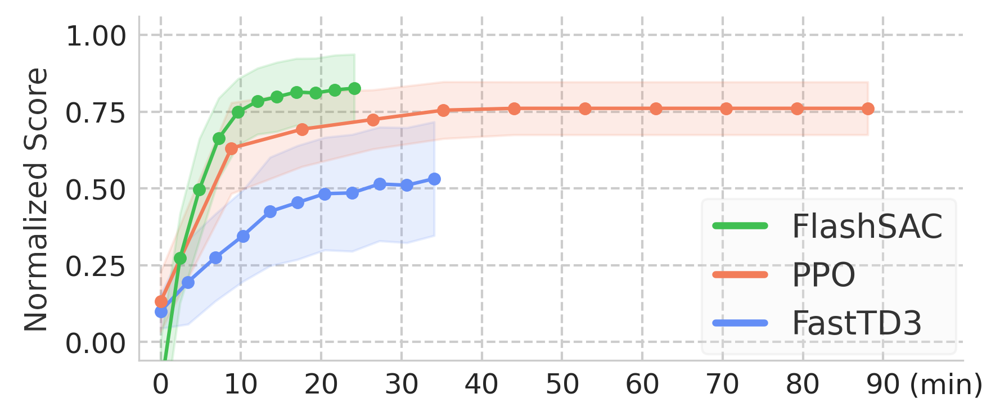
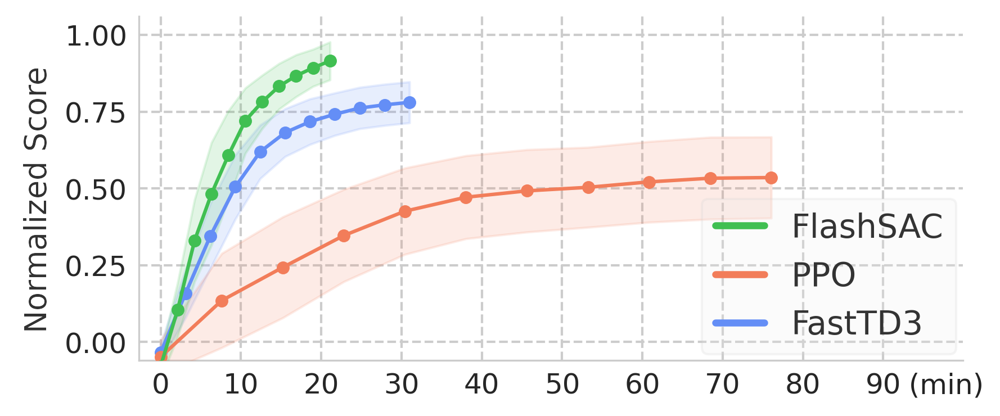
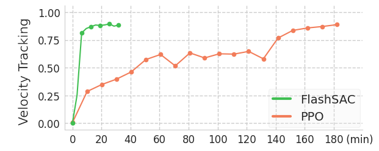
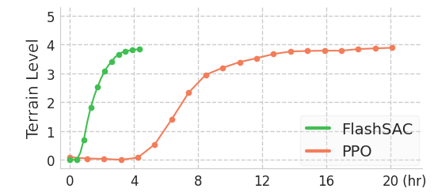
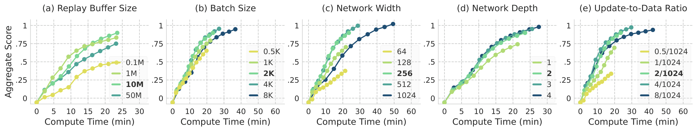
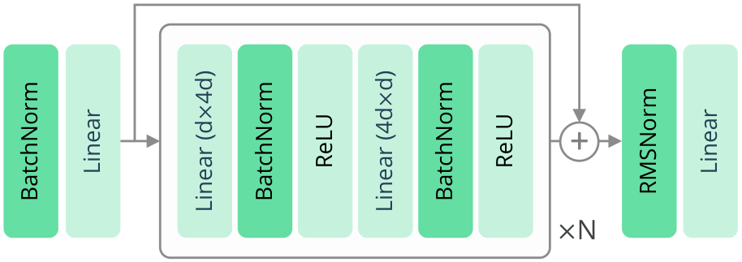
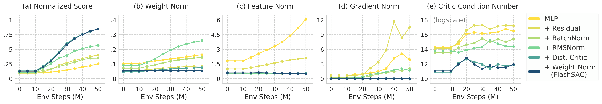
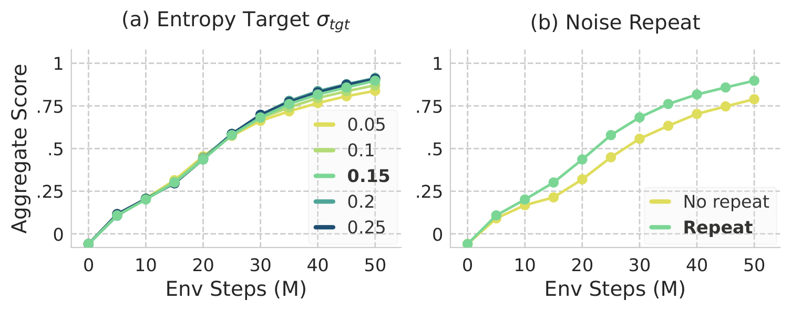

A fast and stable off-policy RL algorithm that achieves the highest asymptotic performance in the shortest wall-clock time among existing methods for high-dimensional sim-to-real robotic control
If you're using PPO, try FlashSAC!




PPO has been the default for sim-to-real RL in constrained domains like quadruped locomotion and gripper manipulation. But modern robot learning — humanoids, dexterous manipulation, vision-based control — pushes into higher dimensions where discarding past experience after every update is no longer affordable.
Off-policy RL is the natural alternative, reusing replay data for far higher efficiency. Yet it remains uncommon for sim-to-real, as fitting a critic via the bootstrapped Bellman objective is slow and unstable:
$$\mathcal{L}_Q = \mathbb{E}_{(s,a,r,s') \sim \mathcal{D}} \left[ \left( Q_\theta(s, a) - (r + \gamma Q_\theta(s', a')) \right)^2 \right]$$
Targets depend on the critic's own predictions, so errors compound through repeated bootstrapping. FlashSAC resolves this with three mechanisms: (i) fast training via fewer updates, larger models, and higher throughput; (ii) stable training by bounding weight, feature, and gradient norms; and (iii) broad exploration for diverse coverage. Across 60+ tasks in 10 simulators, it outperforms PPO and strong off-policy baselines, cutting sim-to-real humanoid walking from hours to minutes.
Following scaling trends from supervised learning, FlashSAC trades frequent small updates for high data throughput, large models, and infrequent gradient updates — a regime made possible by the stability mechanisms below.

Ablation of FlashSAC's fast training components: massively parallel simulation, large replay buffer, large model with large batches and fewer updates, and code optimizations.
Scaling alone worsens the stability of bootstrapped critic updates FlashSAC stabilizes training by constraining weight, feature, and gradient norms.

FlashSAC Architecture. The architecture consists of stacked inverted residual blocks with pre-activation batch normalization and post-RMS normalization.

Ablation of FlashSAC's stable training components that constrain weight, feature, and gradient norms throughout training.
FlashSAC uses two complementary mechanisms to broaden state-action coverage.

Ablation of FlashSAC's exploration mechanisms: unified entropy target and noise repetition.
@article{kim2026flashsac,
title={FlashSAC: Fast and Stable Off-Policy Reinforcement Learning for High-Dimensional Robot Control},
author={Kim, Donghu and Lee, Youngdo and Park, Minho and Kim, Kinam and Nahendra, I Made Aswin and Seno, Takuma and Min, Sehee and Palenicek, Daniel and Vogt, Florian and Kragic, Danica and Peters, Jan and Choo, Jaegul and Lee, Hojoon},
journal={arXiv preprint arXiv:2604.04539},
year={2026}
}